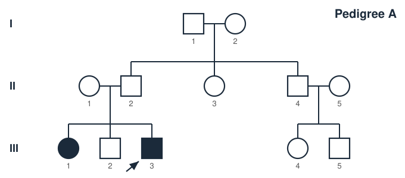
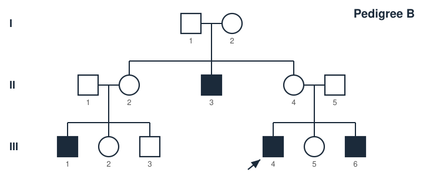
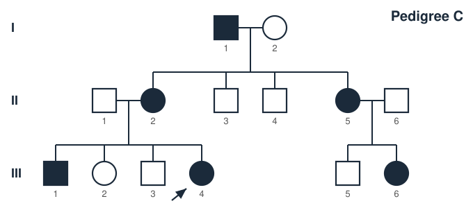
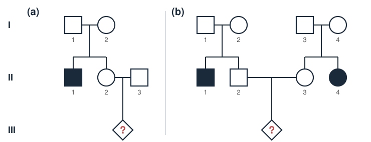
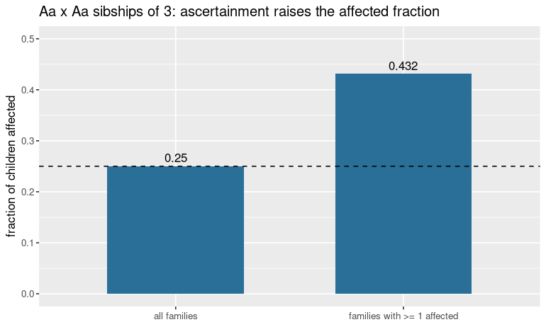

Exercise: pedigree analysis
Goal
By the end of this exercise you should be able to:
- read a pedigree drawn with standard symbols, and name each person (II-3);
- decide, trio by trio, which modes of inheritance (AR, AD, XR, XD) a pedigree rules out, and rank the modes that remain;
- identify obligate carriers;
- compute carrier and risk probabilities with the product rule and the 2/3 conditional probability;
- explain how consanguinity, incomplete penetrance, new mutations and ascertainment bias affect what a pedigree shows;
- look up the mode of inheritance, gene and chromosome of a disease in OMIM, MedGen and NCBI Gene, and read a variant record in ClinVar;
- simulate families in R with
rbinomandreplicate, and filter them the way a clinic does.
Do the pen-and-paper part first. The demo and R come after.
Background
Symbols. Square = male, circle = female, filled = affected, half-filled = carrier, slash = deceased, double mating line = related partners, arrow = proband. Generations are roman numerals from the top; people are numbered left to right.
Transmission rules. Autosomes: each parent passes one of two alleles, ½ each. X chromosome: a father passes his X to every daughter and his Y to every son; a mother passes either X, ½ each. Males have one X (hemizygous).
What rules a mode out (one gene, full penetrance, no new mutations):
| You see in one family | Rules out |
|---|---|
| Affected child, both parents unaffected | AD and XD |
| Both parents affected, an unaffected child | AR |
| Father → son transmission, mother unaffected | XD (and makes XR unlikely) |
| Affected father, unaffected daughter | XD |
| Affected mother, unaffected son | XR |
| Affected daughter, unaffected father | XR |
Among the modes that remain, prefer the one that needs the fewest extra assumptions, such as carriers who married into the family.
Risk formulas.
- Unaffected child of Aa × Aa: \(P(Aa \mid \text{unaffected}) = \frac{1/2}{3/4} = \frac{2}{3}\).
- Child affected (AR) = P(mother is Aa) × P(father is Aa) × ¼.
- Ascertainment: in sibships of size n where each child is affected with probability q, families with at least one affected child have on average \(\dfrac{nq}{1-(1-q)^n}\) affected children.
By hand
Use the pedigrees below. Unless stated, assume one gene, full penetrance and no new mutations.

B1. For pedigree A, take each mode in turn (AR, AD, XR, XD). Is it consistent, or ruled out? If it is ruled out, name the parents and the child that make it impossible.
B2. In pedigree A, assume autosomal recessive inheritance. (a) Which people are obligate carriers? (b) What is the probability that III-2 is a carrier? (c) The allele is rare, so assume that only one of I-1 and I-2 is a carrier. What is the probability that II-3 is a carrier?

B3. For pedigree B, which modes are ruled out, and by which trio? For each mode that remains, list the people who must be carriers. Which mode is most likely, and why? Name a real disease that is often inherited like this.
B4. In pedigree B, assume X-linked recessive inheritance. (a) What is the probability that III-5 is a carrier? (b) III-5 has a son with an unaffected man. What is the probability that the son is affected?

B5. For pedigree C, which modes are ruled out, and by which trio? Three modes remain. Rank them, with a reason. Under autosomal dominant inheritance, what is the probability that I-1’s four children show exactly the pattern drawn (both daughters affected, both sons unaffected)? Describe one new family that would rule out X-linked dominant.

B6. In panel (a), II-1 has phenylketonuria (PKU, autosomal recessive). His sister II-2 has a child with II-3, a man from a population in which the carrier frequency is 1/50. He has no family history. (a) What is the probability that II-2 is a carrier? (b) What is the risk that their child (III-1) has PKU? (c) Their first child turns out to have PKU. What is the risk for their second child?
B7. In panel (b), II-1 and II-4 both have PKU. Their unaffected siblings II-2 and II-3 have a child together. The two families are not related. What is the risk that the child has PKU?
B8. (consanguinity) A man is a known carrier of a rare recessive allele; his wife is not a carrier. Two of their grandchildren, first cousins through two different children, have a child together. Assume nobody who married in carries the allele. (a) What is the probability that each cousin is a carrier? (b) What is the risk that their child is aa? (c) Compare with one of the cousins having a child with an unrelated partner from a population with carrier frequency 1/50.
B9. (X-linked risk) A woman’s brother has Duchenne muscular dystrophy (X-linked recessive). Her parents are unaffected, and we assume it was not a new mutation. (a) What is the probability that she is a carrier? (b) What is the probability that her first son is affected?
Explore
The demo draws a random pedigree under a hidden mode of inheritance. Click a mode to test it. If the mode is consistent, the demo shows one set of genotypes that fits everyone (– means either allele) and draws the obligate carriers half-filled. If it is ruled out, the parents and child that make it impossible are ringed in red. The demo assumes full penetrance and no new mutations; people who married in may be carriers.
E1. Test all four modes on the first pedigree. Which are ruled out? For each, write the trio that breaks it, in the form “II-1 × II-2 → III-3”.
E2. Two modes are consistent. Under each, which people must be carriers? Which of them married into the family? Which mode do you favour, and why? Note the double line: does it change your mind? Then press reveal true mode.
E3. Press new pedigree once. Which mode is ruled out now, and by which trio? Of the three modes left, which is most likely? Look at the children of the affected men I-1 and III-3. Under autosomal dominant inheritance, how likely is that pattern?
E4. Press new pedigree about ten times, and test AR each time. How often is AR ruled out? Using the rule-out table, explain why AR is so hard to rule out.
E5. The demo assumes full penetrance. Sketch a small autosomal dominant family that the demo would wrongly rule out as AD if one person in it were non-penetrant. Which of the demo’s verdicts would change?
E1. The pedigree is seed 2. AD is ruled out by II-1 × II-2 → III-3 (an affected son of two unaffected parents), and again by III-4 × III-5 → IV-4. XD is ruled out by II-1 × II-2 → III-3: an affected son needs XA from his mother, and II-2 is unaffected. The same holds for III-5 → IV-4.
E2. AR and XR are consistent.
- Under AR, II-1 and II-2 (the parents of III-3) and III-4 and III-5 (the parents of IV-4) must be carriers. II-1 married into the family, so AR needs a second, unrelated carrier of the same rare allele.
- Under XR, I-2, II-2, II-3 and III-5 must be carriers. They are all blood relatives, linked through women, so nobody who married in needs to be a carrier.
XR needs fewer coincidences, so it is favoured. The double line (III-4 and III-5 are first cousins) is a classic hint for AR, and it does explain IV-4 under AR. But it does not explain III-3, whose parents are not related. The true mode is X-linked recessive: affected males related through unaffected women.
E3. (Seed 3.) XR is ruled out by II-1 × II-2 → III-1 (and → III-2): II-2 is an affected woman, so under XR she is XaXa and every son must be affected. AR, AD and XD remain. AR needs two people who married in (II-1 and III-4) to be carriers, so it is unlikely. I-1 has two affected daughters and one unaffected son; III-3 has an affected daughter and an unaffected son. That is exactly the XD pattern. Under AD, each of these five children independently has a ½ chance of matching it: (½)5 = 1/32. XD is the best explanation, and reveal confirms it. One affected son or one unaffected daughter of an affected father would have ruled XD out.
E4. AR is ruled out only rarely. The only trio that excludes it is two affected parents with an unaffected child, because aa × aa can only give aa. Any unaffected person can be a carrier, so an affected child of unaffected parents, or a skipped generation, never contradicts AR. This is why the second step of the strategy (count the carriers a mode needs) matters so much for AR.
E5. For example: I-1 affected, his son II-1 unaffected (but non-penetrant, Aa), and II-1’s daughter III-1 affected, with an unaffected mother II-2. The trio II-1 × II-2 → III-1 is “affected child, both parents unaffected”, so the demo rules out AD, and XD as well, even though the true mode is AD. AR would stay consistent (II-1 and II-2 as carriers). A real geneticist would treat II-1 as an obligate carrier with incomplete penetrance. This is a limit of any rule-out table that assumes full penetrance.
Find it
Each disease has a record in OMIM (Online Mendelian Inheritance in Man), which gives a six-digit MIM number, and in MedGen at NCBI. Orphanet is a European portal for rare diseases with similar information. The gene record is in NCBI Gene. In OMIM, the table Phenotype-Gene Relationships near the top of a disease entry lists the chromosome location, the gene and the inheritance (AD, AR, XLR, XLD). In MedGen, read the section Mode of inheritance. In NCBI Gene, read Location in the Summary box.
F1. Duchenne muscular dystrophy: OMIM 310200, or MedGen “Duchenne muscular dystrophy”. What is the mode of inheritance? Which gene is mutated, and on which chromosome band does it lie (NCBI Gene: search “DMD human”)? Which hallmark from the lecture fits the fact that most patients are boys?
F2. Marfan syndrome: OMIM 154700, or MedGen “Marfan syndrome”. Mode of inheritance, gene and chromosome band? What pedigree pattern would you expect to see?
F3. Phenylketonuria: OMIM 261600, or MedGen “Phenylketonuria”. Mode of inheritance, gene and chromosome band? What does the gene’s protein do (read the gene’s full name)?
F4. X-linked hypophosphatemic rickets: OMIM 307800, or MedGen “Familial X-linked hypophosphatemic vitamin D refractory rickets”. Mode of inheritance, gene and chromosome band? An affected father has two sons and two daughters with an unaffected woman: what do you predict?
F5. ClinVar. ClinVar collects reports on human variants and what they do. Search ClinVar for PAH[gene] R408W, a common PKU variant, and open the record named NM_000277.3(PAH):c.1222C>T (p.Arg408Trp). Report: (a) the variant’s name in HGVS notation, and what c.1222C>T and p.Arg408Trp each mean; (b) its germline classification (clinical significance) and its review status; (c) the condition it is reported for, and its molecular consequence; (d) its dbSNP ID (rs number). Then, in two or three sentences, explain what a ClinVar record contains, and why the review status matters.
These facts were checked against NCBI MedGen, NCBI Gene and ClinVar (via the NCBI E-utilities).
| Disease (MIM) | Inheritance | Gene (gene MIM) | Location | |
|---|---|---|---|---|
| F1 | Duchenne muscular dystrophy (310200) | X-linked recessive | DMD, dystrophin (300377) | Xp21.2-p21.1 |
| F2 | Marfan syndrome (154700) | autosomal dominant | FBN1, fibrillin 1 (134797) | 15q21.1 |
| F3 | Phenylketonuria (261600) | autosomal recessive | PAH, phenylalanine hydroxylase (612349) | 12q23.2 |
| F4 | X-linked hypophosphatemic rickets (307800) | X-linked dominant | PHEX, phosphate regulating endopeptidase X-linked (300550) | Xp22.11 |
Click path (MedGen). Open the MedGen link (or search MedGen for the disease name) → the page for the disease → section Mode of inheritance (for example “X-linked recessive inheritance”) → the Genes field names the gene. Click path (NCBI Gene). Search Gene for “DMD human” → “DMD dystrophin [Homo sapiens (human)]” → Summary → Location: Xp21.2-p21.1. In OMIM the same facts are in the Phenotype-Gene Relationships table (Location, Phenotype, Inheritance, Gene/Locus).
- F1. X-linked recessive: males are hemizygous, so one Xa is enough. Affected boys are related through carrier mothers, and there is no father-to-son transmission.
- F2. Autosomal dominant: affected people in every generation, about ½ of the children of an affected parent affected, both sexes, and male-to-male transmission possible.
- F3. Autosomal recessive. PAH encodes phenylalanine hydroxylase, the liver enzyme that converts phenylalanine to tyrosine. Without it phenylalanine builds up. (This is why newborns are screened and treated with a low-phenylalanine diet.)
- F4. X-linked dominant. An affected father gives his X to both daughters, so both are affected, and his Y to both sons, so neither is.
F5. ClinVar Variation ID 577 (accession VCV000000577). Click path: ClinVar search → PAH[gene] R408W → the record NM_000277.3(PAH):c.1222C>T (p.Arg408Trp).
- HGVS name
NM_000277.3(PAH):c.1222C>T (p.Arg408Trp).NM_000277.3is the reference transcript (version 3) of PAH.c.1222C>Tmeans position 1222 of the coding sequence changes from C to T.p.Arg408Trpmeans amino acid 408 of the protein changes from arginine to tryptophan (R408W in one-letter code). - Germline classification Pathogenic; review status reviewed by expert panel (three stars; the highest level below practice guideline).
- Condition phenylketonuria; molecular consequence missense variant.
- dbSNP rs5030858. (It is also OMIM allelic variant 612349.0002. On GRCh38 it lies at chr12:102,840,493.)
A ClinVar record joins a variant (its HGVS names on transcript and protein, its genomic location and identifiers) with interpretations submitted by laboratories and expert groups: the classification (pathogenic, likely pathogenic, uncertain significance, likely benign, benign), the condition, and the evidence. The review status tells you how much to trust the classification: a single lab’s submission with no criteria counts for less than agreement among several labs, or an expert-panel review. The number of submissions changes over time; the classification of a well-studied variant such as R408W is stable.
In R
This unit’s new R idiom is simulation with rbinom and replicate, then filtering. rbinom(n, size, prob) draws n binomial random numbers: with size = 1 each draw is 1 (affected) with probability prob, otherwise 0. replicate(N, expr) runs expr N times and collects the results; here each run is one family. We then keep only some families with filter, as a clinic does without meaning to. Use set.seed so that your numbers match the solutions.
library(dplyr)
library(ggplot2)Risk as a function
R1. Write a function p_child_affected(p_carrier_mother, p_carrier_father) that returns the probability that a child is affected by an autosomal recessive disease. Check it on two known carriers (answer ¼). Then use it for B6: an unaffected sister of a PKU patient and a man from a population with carrier frequency 1/50. Also compute B7 (both partners have an affected sibling).
p_child_affected <- function(p_carrier_mother, p_carrier_father) {
p_carrier_mother * p_carrier_father * 1/4
}
p_child_affected(1, 1) # two known carriers
p_child_affected(2/3, 1/50) # unaffected sib of a patient x person from the population
1 / p_child_affected(2/3, 1/50) # as "1 in ..."
p_child_affected(2/3, 2/3) # both partners have an affected sibR2. The carrier frequency depends on the population. Compute the risk from R1 for carrier frequencies 1/25, 1/50 and 1/100 in one tibble. Your function works on whole vectors, so no loop is needed.
tibble(carrier_freq = c(1/25, 1/50, 1/100)) |>
mutate(risk = p_child_affected(2/3, carrier_freq),
one_in = round(1 / risk))Simulating families
R3. Simulate 10 000 families with Aa × Aa parents and three children each. rbinom(3, size = 1, prob = 1/4) is one family; replicate makes 10 000 of them, one per column. What fraction of all children are affected? How many families have 0, 1, 2 and 3 affected children?
set.seed(1)
n_fam <- 10000
n_kids <- 3
q <- 1/4
kids <- replicate(n_fam, rbinom(n_kids, size = 1, prob = q))
dim(kids) # 3 rows (children) x 10000 columns (families)
kids[, 1:5] # the first five families: 1 = affected
mean(kids) # fraction of all children who are affected
families <- tibble(family = 1:n_fam, n_affected = colSums(kids))
families |> count(n_affected)R4. A clinic only sees families that have at least one affected child. Keep only those families. What fraction of their children are affected? Compare with the analytic value \(\frac{nq}{1-(1-q)^n}\) affected per family, divided by \(n\).
clinic <- families |> filter(n_affected >= 1)
nrow(clinic)
sum(clinic$n_affected) / (n_kids * nrow(clinic)) # fraction affected among their children
expected_per_family <- n_kids * q / (1 - (1 - q)^n_kids)
expected_per_family
expected_per_family / n_kidsR5. Make a bar chart that compares the fraction of affected children in all families and in the clinic’s families, with a dashed line at the Mendelian ¼.
summary_tbl <- bind_rows(
families |> mutate(group = "all families"),
clinic |> mutate(group = "families with >= 1 affected")
) |>
group_by(group) |>
summarise(n_families = n(),
frac_affected = sum(n_affected) / (n_kids * n()))
summary_tbl
ggplot(summary_tbl, aes(x = group, y = frac_affected)) +
geom_col(fill = "#2a6f97", width = 0.6) +
geom_hline(yintercept = 1/4, linetype = "dashed") +
geom_text(aes(label = round(frac_affected, 3)), vjust = -0.4) +
labs(x = NULL, y = "fraction of children affected",
title = "Aa x Aa sibships of 3: ascertainment raises the affected fraction") +
ylim(0, 0.5)R6. Does the bias grow or shrink with family size? Compute the analytic fraction \(\frac{q}{1-(1-q)^n}\) for \(n = 1, \dots, 6\). Explain the value for \(n = 1\).
sizes <- 1:6
round(q / (1 - (1 - q)^sizes), 3)Solutions
B1. Pedigree A.
- AR: consistent. II-1 and II-2 are both carriers.
- AD: ruled out by II-1 × II-2 → III-1 (and → III-3): affected children of two unaffected parents.
- XR: ruled out by II-1 × II-2 → III-1: an affected daughter (XaXa) needs Xa from her father, but II-2 is unaffected.
- XD: ruled out by II-1 × II-2 → III-1 (affected daughter of two unaffected parents) and → III-3 (affected son of an unaffected mother).
Only autosomal recessive remains. An affected daughter of unaffected parents is enough on its own.
B2. (a) II-1 and II-2, the parents of the affected children. (b) III-2 is an unaffected child of Aa × Aa: 2/3. (c) II-2 is Aa, so one of his parents is a carrier. If exactly one of I-1 and I-2 is Aa (and the other AA), each of their children is a carrier with probability 1/2. So II-3 is a carrier with probability 1/2.
B3. Pedigree B.
- AD: ruled out, for example by I-1 × I-2 → II-3 (affected son of unaffected parents), and again by II-1 × II-2 → III-1 and II-4 × II-5 → III-4.
- XD: ruled out by I-1 × I-2 → II-3: an affected son needs an affected mother.
- XR: consistent. Carriers needed: I-2, II-2, II-4, all blood relatives; nobody who married in.
- AR: consistent. Carriers needed: I-1, I-2, II-2 and II-4, and also II-1 and II-5, who married in. Two unrelated people from outside the family would both have to carry the same rare allele.
XR is most likely: only males are affected, and they are related through unaffected women. Duchenne muscular dystrophy and haemophilia A are inherited like this.
B4. (a) Under XR, II-4 is an obligate carrier (XAXa), and II-5 is XAY. III-5 gets XA from her father and either X from her mother: carrier with probability 1/2. (b) Her son is affected only if she is a carrier and passes Xa: 1/2 × 1/2 = 1/4.
B5. Pedigree C.
- XR: ruled out by II-1 × II-2 → III-3: II-2 is an affected woman (XaXa), so every son should be affected, but III-3 is not. Also II-5 × II-6 → III-5, and II-1 × II-2 → III-4 (affected daughter, unaffected father).
- XD, AD and AR are consistent. Ranking:
- XD is most likely. The affected father I-1 has both daughters affected and both sons unaffected, exactly as XD predicts. The affected mothers pass it to about half of their sons and daughters, which also fits.
- AD fits, but the pattern among I-1’s children is a coincidence under AD: (½)4 = 1/16.
- AR needs I-2 and two people who married in (II-1 and II-6) all to be carriers, which is very unlikely for a rare allele.
To rule out XD, find an affected father with an unaffected daughter or an affected son (whose mother is unaffected).
B6. (a) II-2 is an unaffected child of two obligate carriers: 2/3. (b) 2/3 × 1/50 × 1/4 = 2/600 = 1/300. (c) An affected child proves that both parents are Aa. So the risk for the next child is 1/4. Each child is an independent event, and the earlier child does not change the next one.
B7. Each is an unaffected sibling of a patient, so each is a carrier with probability 2/3: 2/3 × 2/3 × 1/4 = 4/36 = 1/9.
B8. (a) Each child of the carrier grandfather is a carrier with probability 1/2. Each grandchild then gets the allele with probability 1/2. So each cousin is a carrier with probability 1/2 × 1/2 = 1/4. (b) 1/4 × 1/4 × 1/4 = 1/64 ≈ 0.016. (c) 1/4 × 1/50 × 1/4 = 1/800 ≈ 0.00125. Marrying a cousin raises the risk about 12.5-fold here, because the allele is in the family. In a random family, where nobody is known to be a carrier, the absolute risk is much smaller.
B9. (a) Her brother is XaY and got Xa from their mother, who is therefore an obligate carrier (XAXa). The woman got one of her mother’s two X chromosomes: carrier with probability 1/2. (b) 1/2 (she is a carrier) × 1/2 (she passes Xa to the son) = 1/4.
Run with Rscript --vanilla from the unit folder. Messages from loading packages are not shown.
R1.
[1] 0.25
[1] 0.003333333
[1] 300
[1] 0.1111111¼ for two known carriers, 1/300 for B6(b) and 1/9 for B7, as by hand.
R2.
# A tibble: 3 × 3
carrier_freq risk one_in
<dbl> <dbl> <dbl>
1 0.04 0.00667 150
2 0.02 0.00333 300
3 0.01 0.00167 600The risk is proportional to the partner’s carrier frequency. Halving the carrier frequency halves the risk.
R3.
[1] 3 10000
[,1] [,2] [,3] [,4] [,5]
[1,] 0 1 1 0 0
[2,] 0 0 0 0 0
[3,] 0 1 0 0 1
[1] 0.2504333
# A tibble: 4 × 2
n_affected n
<dbl> <int>
1 0 4201
2 1 4247
3 2 1390
4 3 162Over all families, 0.250 of the children are affected: Mendel’s ¼. The expected counts are 10 000 × (27, 27, 9, 1)/64 = 4219, 4219, 1406 and 156 families, close to what we see. 42% of the families have no affected child.
R4.
[1] 5799
[1] 0.4318561
[1] 1.297297
[1] 0.4324324Only 5 799 of the 10 000 families reach the clinic. Among their children, 0.432 are affected, not 0.25. The analytic value is 3 × 0.25 / (1 − 0.75³) = 0.75 / 0.578 = 1.297 affected per family, that is 1.297 / 3 = 0.432 per child. The simulation agrees. The ¼ is still true for each child; the families with no affected child are simply missing. This is ascertainment bias. A χ² test of the clinic families against 1:3 would wrongly reject recessive inheritance.
R5.
# A tibble: 2 × 3
group n_families frac_affected
<chr> <int> <dbl>
1 all families 10000 0.250
2 families with >= 1 affected 5799 0.432
R6.
[1] 1.000 0.571 0.432 0.366 0.328 0.304The bias shrinks as families get larger, because a large family is less likely to have no affected child, so fewer families are missing. For n = 1 the fraction is 1: a one-child family is seen only if that child is affected, so every child we see is affected.
Where this leads
Sex chromosomes and X-linkage are treated in full in Part 2 (Chromosome theory), where LOD scores also use pedigrees to map disease genes. The carrier frequencies we assumed come from Hardy–Weinberg in Part 7, and mitochondrial inheritance is in Organelle inheritance in Part 5. The pattern rbinom + replicate + filter returns when we simulate heteroplasmy and genetic drift.